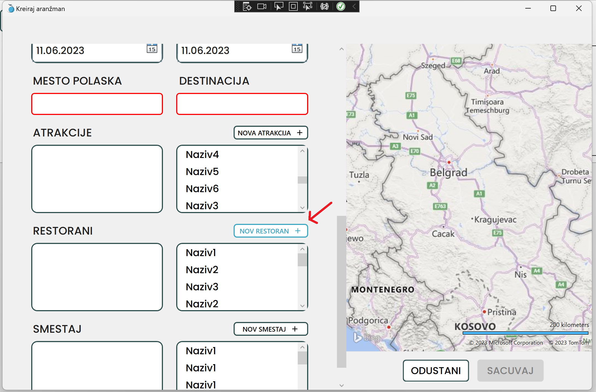
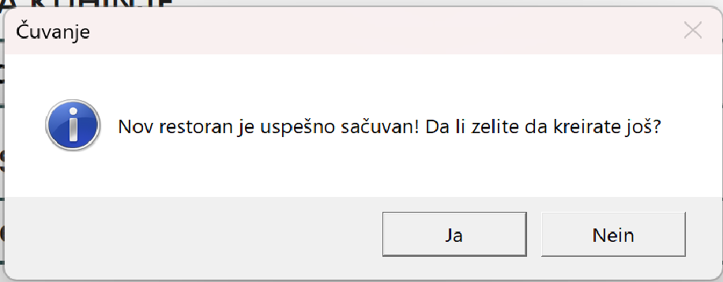

Kako doći do forme za kreiranje novog restorana?
Nakon što ste se prijavili na svoj nalog i otvorio Vam se glavni prozor aplikacije, kliknite mišem na naziv "Restorani", te se uverite da Vam se otvorio prikaz svih restorana, kao ne sledećoj slici.
Sledeće kliknite mišem na dugme "Dodaj", kako biste otvorili novi prozor sa formom za Vaš restoran.
Alternativno, ako se nalazite u situaciji da tokom kreiranja novog aranžmana primetite da Vam restoran koji želite da dodate još ne postoji u sistemu i želite nabrzaka da ga dodate, kliknite na dugme "NOV RESTORAN", koji se nalazi iznad liste svih restorana u Vašoj formi.

Kada Vam se otvori forma za kreiranje novog restorana, primetićete da imate crvena polja, to je naznaka da su ona neispravna te da ne možete sačuvati novi restoran dok ta polja ne popunite.
Klikom na polje za naziv, moćićete da počnete da ukucavate naziv restorana.
(Za brži rad, možete se kretati kroz polja za unos klikom na "tab" dugme na Vašoj tastaturi)
Nakon što unesete željenu vrednost, prestaće polje da se crveni, što naznačava da je polje sada ispravno i možete da nastavite dalje sa unosom podataka.
Sledeće polje predstavlja izbor vrste kuhinje koju restoran nudi. Klikom na polje otvoriće Vam se lista sa ponuđenim mogućim vrstama kuhinje, koji restorani mogu da nude. Klikom na bilo koji element iz liste, izabirete ga.
Poslednje polje predstavlja adresu restorana, na osnovu kojeg će se posle na mapi iscrtavati pin za restoran. Preporučeno je da unesete što detaljniju adresu ili po mogućnosti da tačnu adresu kopirate sa interneta.
Nakon što ste uneli sve potrebne podatke, primetićete da Vam je dugme za čuvanje promenilo boju, naznačavajući da sada možete da sačuvate Vaš restoran klikom na to dugme.
(Za brži rad, možete i jednostavno da pritisnete ENTER na Vašoj tastaturi)
Nakon što ste se odlučili da sačuvate restoran, kako biste se uverili da je sve bilo ispravno, pojaviće Vam se prozor za potvrdu. Ako želite da odma za redom kreirate još jedan restoran u Vašem sistemu, kkliknite na DA. U suprotnom kliknite na NE kako biste se vratili na početni prozor aplikacije.

Ako se ipak predomislite iz bilo kog razloga i ne želite da napravite novi restoran, možete klikom na dugme ODUSTANI da prekinete. Otvoriće Vam se prozor za potvrdu akcije. U slučaju da ste slučajno pošli da odustanete, možete prekinuti akciju.
(Za brži rad, možete i na tastaturu pritisnuti kombinaciju CTRL+X)